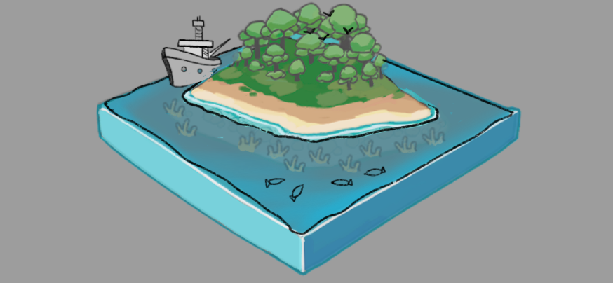

ARchipalago Group Project
Overview project
ARchipalago is an AR project along user to explore a living, interactive island where your choices shape the ecosystem! User can use AR technology to see how different factors impact the land, water, and wildlife.
The Goals of the project:
- Understand how ecosystems respond to human actions and natural changes
- Explore and learn about the role of mangroves, coral nurseries, wind farms, and fishing activity
- Experiment with different variables and see their effects in real time
Jan 29, 2025
BrainStorming
In our first meeting, we brainstorming various interactive educational models designed to enhance learning in biomedical science. The discussion focused on utilizing 3D-printed interactive models and digital applications to create engaging, hands-on experiences. The proposed topics cover ecosystem dynamics, molecular interactions, reproduction, and immune responses, each offering a unique way to visualize complex biological and environmental processes. Below is a summary of the key ideas discussed.
- Ecosystem: Add different factors caused from human activity to observe the ecosystem changes.
- Molecular Reactions: Demonstrate different chemical interactions and their outcomes.
- Reproduction: Show sperm-egg interaction, explaining the biological basis of twins, triplets, and other multiple births.
- Immune Response: Demonstrate antibody-virus binding and macrophage responses to foreign cells.
Following discussions, we have decided to focus on Ecosystem topic due to its greater potential for interactivity and the opportunity to explore topics we haven't covered in previous assignments.
Feb 06, 2025
Research and Discussion
Feb 8-10, 2025
Storyboard and Deveopler Walkthrough
I was assigned to create the development walkthrough and storyboard for the project. It felt quite challenging, but I saw it as an opportunity to practice storyboarding and refine my walkthrough development skills. Thankfully, Max volunteered to join me in working on the development, which was a huge help. Before starting the paperwork, Max and I spent two hours discussing the project's interaction and visual elements to ensure we were aligned when working on the dev walkthrough together. I learned a lot from Max during our discussion—watching them sketch while explaining their ideas was incredibly inspiring, and I truly appreciated the collaboration. It has always been a dream of mine to work this way. Here are some drafts Max created during our discussion, which helped keep us on the same page and made our conversation more efficient:


Looking back our discussion, one thing we could improve in the future is holding a quick follow-up meeting to share our ideas with the rest of the team. At the time, we didn’t explain everything to everyone since they were too busy to gather on short notice. Even after some teammates spoke with the instructor, I was still unsure if the ideas Max and I proposed were fully confirmed by everyone. Given the tight timeline—and the fact that I was also traveling back to Taiwan—Max and I decided to outline the dev walkthrough and storyboard first. This allowed us to set placeholders and rough content, making it easier to adjust later if any ideas changed.
I prepared the descriptions for the dev walkthrough based on our discussion, while Max created the wireframes and images for the document. Max also designed the main island image for the storyboard, and I continued developing the rest. I challenged myself to draw as quickly as possible to submit a draft for one round of feedback before the deadline. While sketching, I focused on making the images simple and clear so that Naomi and I, as modelers, could efficiently build the necessary 3D assets within our limited timeframe. From the feedback, I learned the importance of incorporating interactive elements into the storyboard and emphasizing user interaction in the visuals. Initially, I approached the storyboard as I would for an animation, focusing more on sequential visuals rather than user engagement. However, after receiving feedback, I realized that including user interactions helps clarify how each visual element fits into the project. This approach not only improves communication within the team but also ensures a smoother development process.
Some storyboarding drafts:
AR view




Mini game